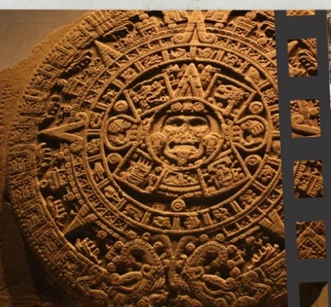

Beyond
the frame.
One collage. A world of connections.
Explore the storyWhat lies behind
what we see?
The pyramids of Egypt, the Colosseum, Christ the Redeemer and Mount Fuji are connected visually through the film strip in my collage, but there are also economic, political and historical connections between them. Throughout this course, I have come to realize that the things we enjoy as consumers or travelers are often the end result of systems we rarely give much thought to.
A world in motion
The airplane represents time-space compression, or how advances in transportation and communication change our experience of distance (Gandhi 5). The beaches and landmarks illustrate the cultural benefits of tourism. In my midterm reflection, I examined Our World in Data’s international tourism graph, which showed a sharp decline during COVID-19 followed by a recovery in the following years (Herre and Samborska). This reveals the vulnerability of tourism-dependent economies. A vacation for one person is a livelihood for another. Global citizenship involves recognizing that mobility is a privilege shaped by income, nationality and immigration policy.
Culture travels.
The sushi, spaghetti and espresso reflect cultural diffusion and hybridity. Tomatoes, for example, originated in the Americas before becoming integral to Italian cuisine (Gandhi 47). Looking through the lens of cultural analysis, the coffee itself is an artifact, the café is a sociofact, and the association of espresso with leisure is a mentifact (Gandhi 40). The K-pop case similarly demonstrates how cultural products can circulate internationally without losing their local identity (Gandhi 381). Glocalization allows people to adapt what they encounter rather than simply adopt a uniform global culture.
Who captures the value?
On the other side of this exchange is the distribution of economic value. The Chanel storefront and espresso remind me of my assignment comparing tea with Japanese artisan ceramicware. Dependency theory helps explain why producers of raw commodities can remain dependent on wealthier markets that control branding and distribution (Gandhi 33). Colonialism may no longer take the form of direct territorial control, but unequal relationships can persist through global supply chains. The modern architecture also recalls my Dubai case study: migrant workers help build and maintain a global city while some face recruitment debt, insecure employment and restrictions on mobility. Remittances connect their earnings to families abroad, while gendered care work and the double burden expose labor that economic measures often overlook (Gandhi 320).
Access is not impact.
The beaches and buildings also make me think about access to water. In Water for the Poor, Dhaka’s proposed water reform initially excluded informal settlements despite their need for clean water (Nguyen 1). Through the social determinants of health and fundamental-cause theory, we can understand how income, housing and access to resources shape health outcomes (Gandhi 200–01). My sanitation assignment also examined how infrastructure can prevent disease before medical treatment is necessary. Similarly, the WHP-Sky case taught me that recruiting rural healthcare providers and increasing patient visits did not necessarily improve treatment. Measuring implementation is not the same as measuring impact.
The systems behind progress.
This distinction is also evident in Power Africa. The U.S. focused on reducing barriers to private investment, whereas China used large infrastructure loans. Yet Kenya’s Lake Turkana wind project faced delays connecting to the grid, illustrating the importance of systems thinking and coordination (Gasparro 5, 8–10). The textbook’s Kyrgyzstan case further shows that smaller states have agency despite economic dependence and geopolitical competition (Gandhi 261). In India’s net neutrality case, the proposed Free Basics service raised a similar question about whether expanding access also transfers decision-making power to corporations. Development should expand people’s choices, not simply their dependence.

Who defines development?
The Aztec Sun Stone and African landscapes raise another issue: whose knowledge do we consider valuable? I think we often associate progress with urbanization while overlooking Indigenous learning systems. Cultural sovereignty means communities should retain authority over their knowledge and traditions (Gandhi 79–83). Power Africa’s Beyond the Grid initiative illustrates how rural electrification can support existing communities rather than require them to urbanize (Gasparro 5–6). Even my depiction of Africa through wildlife and pyramids makes me reconsider the danger of reducing diverse societies to a single story.
Beyond the postcard.
Finally, the natural landscapes remind me of the environmental costs of consumption and travel. Climate vulnerability is not distributed equally, even though climate change is global (Gandhi 295). Tourism, food production and transportation all rely on land, water and energy. My research on alternative proteins also made me consider whether technological innovations reduce environmental costs or merely shift them elsewhere. Ultimately, my collage reflects the opportunities and inequalities of globalization. I still appreciate these experiences, but I now consider whose labor makes them possible, who defines progress and how development could serve communities on their own terms.
Works Cited
Gandhi, Miloni. Who Made the World This Way? An Introduction to Global Studies. LibreTexts, 2026.
Gasparro, Kate. Electrifying Power Africa: Balancing National Principles and International Pressures. Leadership Academy for Development.
Herre, Bastian, and Veronika Samborska. “Key Charts on Tourism.” Our World in Data, ourworldindata.org/tourism. Accessed 12 Oct. 2026.
Nguyen, Anna. Water for the Poor: Dhaka’s Water Utilities Turnaround Challenge. Abridged and revised by Mary E. Hilderbrand, Leadership Academy for Development and Asian Development Bank, 2023.